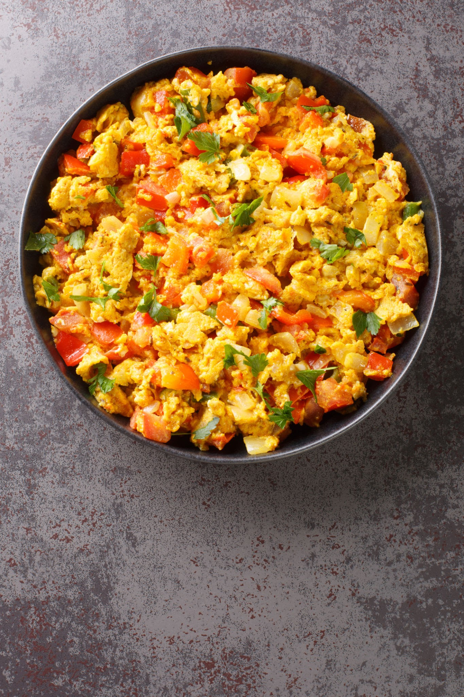

Egg Bhurji
⭐⭐⭐⭐⭐ 4.8 Rating | ⏱ 20 Minutes | 🍽 2 Servings
Category
Lunch / Dinner
Difficulty
Easy
Calories
240 kcal
Cooking Style
Boiled & Tempered
📋 Ingredients
- 4 large eggs
- 2 tbsp milk (optional, for extra softness)
- 1 large onion (finely chopped)
- 2 medium tomatoes (finely chopped)
- 2 green chillies (finely chopped)
- 1 tsp ginger-garlic paste
- 1.5 tbsp butter or oil
- 1/2 tsp cumin seeds (jeera)
- 1/2 tsp turmeric powder
- 1 tsp red chilli powder
- 1 tsp coriander powder
- 1/2 tsp garama masala
- 2 tbsp fresh coriander leaves (finely chopped)
- 1 lemon wedge
- Salt to Taste
🍳 Required Utensils
- Non-stick skillet/kadai
- whisk or fork
- mixing bowl
- silicone spatula
📖 Introduction
Egg Bhurji (Anda Bhurji) is a high-flavor Indian street food classic. It transforms simple scrambled eggs into a savory, spicy, and aromatic dish sautéed with finely chopped onions, tomatoes, green chillies, and warm Indian spices.
🔬 Principle
The dish relies on creating a fragrant, semi-cooked onion-tomato masala base before introducing beaten eggs. Whisking and scrambling the eggs on medium-low heat allows them to absorb fat-soluble spice compounds while coagulating slowly to form soft, moist curds rather than dry, rubbery crumbles.
👨🍳 Procedure
- Whisk the Eggs
- Crack 4 eggs into a mixing bowl.
- Add a pinch of salt and 2 tbsp of milk (if using)
- Whisk thoroughly until smooth and aerated.
- Heat butter or oil in a pan over medium heat.
- Add cumin seeds and let them crackle. Add chopped onions and green chillies
- cook until onions turn translucent and light golden. Stir in ginger-garlic paste and sauté for 1 minute.
- Add chopped tomatoes, turmeric powder, red chilli powder, coriander powder, and salt.
- Cook for 3–4 minutes until tomatoes soften completely and oil starts to separate from the edges.
- Lower the heat to low. Pour in the whisked eggs.
- Let them sit for 10 seconds, then gently fold and scramble continuously using a spatula until soft curds form and no liquid egg remains (about 2–3 minutes).
- Sprinkle garama masala and fresh coriander leaves over the bhurji.
- Turn off the heat immediately, squeeze a few drops of fresh lemon juice, and toss lightly before serving.
⚠ Precautions
- Contains cholesterol from egg yolks
- Individuals on strict low-cholesterol diets can substitute 2 whole eggs with 4 egg whites.
💡 Chef Tips
- Cooking bhurji in butter (or a mix of butter and oil) yields a significantly richer, street-style taste compared to oil alone.
- Never cook the eggs on high heat once added to the pan—high heat evaporates moisture too quickly, making the scramble dry and rubbery.
- Dice onions and tomatoes as small as possible so they integrate seamlessly into the soft egg curds.
🥗 Nutrition Facts
| Nutrient | Amount |
|---|---|
| Calories | 240 kcal |
| Protein | 14 g |
| Carbohydrates | 6 g |
| Fat | 18 g |
| Fiber | 1.5 g |
🍽 Serving Suggestions
- Serve piping hot with buttery toasted pav (bread rolls), parathas, or whole wheat chapatis.
- Pairs brilliantly alongside a hot cup of Indian masala chai for breakfast or a quick midnight meal.
🌿 Health Benefits
- Packed with high-quality bioavailable protein, essential choline for brain function, and vitamin B12.
- Vegetables add vitamin C and dietary fiber.
✅ Result
A vibrant, golden-hued egg scramble studded with red tomatoes, green chillies, and fresh coriander, delivering a soft texture and a perfect balance of heat, tang, and richness. Ingredients & Utensils
🎥 Watch Recipe Video
Learn the complete recipe by watching the step-by-step video.
▶ Watch on YouTube